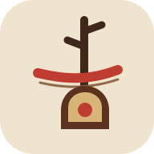

当前一音 · 拉弓
D
1
得分0000
连击×0
八拍入门 · 熟悉音位0 / 14
左手 · 按弦选音
点一下音位
红色纸签是你正在按住的音。
右手 · 持弓演奏
这一弓，向右拉
先点“开始练习”，音符会等你慢慢拉。
准确率 100%
ERHU POCKET STUDIO
当前一音 · 拉弓
左手 · 按弦选音
红色纸签是你正在按住的音。
右手 · 持弓演奏
先点“开始练习”，音符会等你慢慢拉。
准确率 100%